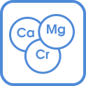

Что входит в курс?
МИНЕРОЛ - уникальный препарат
для очищения и оздоровления организма.
4 упаковки Минерола по 100 г
Сырьем для изготовления этой добавки является монтмориллонит - глинистый
материал, который добывают на глубине 70-80 м. Ученые Института Говарда Хью и Massachusets Central
Hospital (США) обнаружили в нем уникальные элементы, из которых состоит мембрана человеческой клетки.
Книга “ФОРМУЛА ЗДОРОВЬЯ”
Авторы:
Л. Борисенко,
Е. Стародубцев.
Почему мы болеем?
Вы удивитесь, но ваш организм может сам справляться со всеми болезнями. Функция саморегуляции заложена в вас природой! Но загрязненный городской воздух, радиация, ароматизаторы, красители, трансжиры, водопроводная вода, фармпрепараты и прочие токсины нарушают систему и медленно убивают вас… Установлено, что с пищей и водой за год человек получает до 10 кг ядов и токсинов!У каждой болезни есть всего 3 основные причины:
загрязнение организма
недостаток минералов
закисление
организма
Минерол -
это 70 органических минералов докембрийского периода
из моллюсков и водорослей.
Кремний.
Его дефицит ускоряет старение, способствует онкозаболеваниям и
хронической усталости. Ведет к атеросклерозу, инфарктам, инсультам, способствует образованию камней.
Кальций.
Недостаток снижает иммунитет, ведет к выпадению волос, зубов и дефектам
ногтей. Провоцирует хрупкость костей, наросты, уплотнения и т.д.
Хром.
Основная его функция -
регуляция сахара в крови.
Недостаток провоцирует диабет, атеросклероз, нарушения в работе щитовидки
и снижением иммунитета.
Железо.
Дефицит железа входит в топ-10 угроз здоровью по версии ВОЗ.
Ведет к утомлению, снижению иммунитета, провоцирует
рак желудка.


Йод.
При дефиците йода нарушается работа щитовидки, слабость, бессонница,
потеря аппетита, ухудшение зрения. Доказано, что недостаток йода провоцирует онкозаболевания.
Цинк.
Дефицит цинка это заболевания волос и ногтей, риск кожных заболеваний,
неврологические заболевания.
Магний.
Самый важный минерал для вашего сердца. Дефицит провоцирует онемение
конечностей, частые головные боли, судороги, кариес, быструю утомляемость.
Селен.
Снижает риск онкозаболеваний почти на 40%, а смертность от них - на 50%.
Защищает печень, кожу и мышцы от токсинов.
Минерол очищает Ваш организм, выводит токсины, восполняет дефицит минералов и ощелачивает кровь
Очищение
крови
Очищение
желудочно-кишечного тракта
Нормализация
давления
Укрепление
стенок сосудов
Очищение
печени

Полноценное
минеральное питание
Восстановление
суставов и костей
Стабилизация
уровня сахара
Почему Минерол необходим при?
Выберите болезнь из списка, чтобы узнать о действии Минерола и получить рекомендации по приему
Действие Минерола:
Являясь источником кремния,
Минерол способствует укреплению стенок
сосудов, выводит лишние жиры, нормализует формулу крови.
Способствует выработке альфа-холестерина (полезный холестерин, снижает риск возникновения атеросклероза).
Результаты исследований :
- За 21 день приема Минерола исследование показало снижение уровня холестерина в 2, а снижение риска атеросклероза - в 3 раза
- Повысились эритроциты и гемоглобин, что свидетельствует о положительном влиянии на клетки кроветворной системы
- Нормализовались функции печени и желчевыводящих путей
- Увеличился потенциал имунной системы и снизился уровень зашлакованности
- Исследование на курах показало снижение общего уровня холестерина и уменьшение отложения жира почти в 2 раза
Рекомендации по применению:
При повышенном холестерине пить Минерол
2-3 раза в день с водой 40-45 за полчаса до еды с обязательным контролем холестерина
* Подробнее стр. 26-27 «Формула здоровья»,
Л. Борисенко, Е. Стародубцев.
Действие Минерола:
АРТРИТ- АРТРОЗ и другие проблемы костной системы
Главную роль в управлении опорно-двигательным аппаратом играет наиболее важное свойство Минерола в его природной полиминеральной структуре - высокий уровень щелочных элементов – 77%, что способствует при его применении быстрому восстановлению кислотно-щелочного равновесия в организме. Исчезновение различных искривлений в конечностях, уплотнений, «шишек», уменьшение болей в костях, нормализация эмоциональных проявлений и , что особенно значимо, уменьшение и даже полное исчезновение изжоги – минимальный спектр позитивных изменений в организме при использовании Минерола.
Крайне важным элементом Минерола, способствующим восстановлению костной и соединительной ткани, является кремний, без его достаточного количества не усваивается кальций.
Результаты исследований :
- 1-е исследование. Биокоррекция у больных остеоартрозом на фоне остеохондроза позвоночника и ревматоидного артрита (Национальный медуниверситет им Богомольца). Прием Минерола в течение 14 дней (по 5 г 2 раза в день) позволило:
- Уменьшить признаки синовита за первые 4-6 суток, без Минерола за 8-9суток;
Рекомендации по применению:
При повышенном холестерине пить Минерол
2-3 раза в день с водой 40-45 за полчаса до еды с обязательным контролем холестерина
* Подробнее стр. 26-27 «Формула здоровья»,
Л. Борисенко, Е. Стародубцев.
Действие Минерола:
Благодаря природно-сбалансированному минеральному составу, в том числе наличию таких важных элементов, как хром, сера, йод, железо, селективному сорбционному и ощелачивающему свойству Минерола, нормализация веса при его приеме является уникальным побочным эффектом при оздоровлении организма.
Результаты исследований :
- Исследованиями доказано, что при использовании Минерола происходит нормализация липидного обмена, в том числе в опытах на животных установлено уменьшение по сравнению с контролем в 2 раза количества висцерального жира.
- Уменьшение отложения жира в организме, в том числе висцерального, обнаружено также у пациентов, принимавших Минерол вовнутрь и особенно при минерольном обертывании.
- Установлено, что постоянное использование Минерола снижает тягу к сладкому, помогает контролировать аппетит и способствует уменьшению разовой порции пищи для насыщения, что более всего способствует нормализации веса.
- В регуляции веса задействованы следующие механизмы, которые при приеме Минерола, как установлено множеством исследований, способствовали возвращению организма в состояние саморегуляции:
Рекомендации по применению:
При повышенном холестерине пить Минерол
Принимается 6 раз в день за 30 мин до и после каждого приема еды (по 4г на прием). До еды Минерол развести в 150-200 мл горячей воды, а после еды – в 50 мл так же горячей воды. Длительность курса – 30 дней на фоне алкалиновой диеты (30% кислых продуктов, 70% - щелочных) с индивидуальным подбором питания (по дате рождения). Затем Минерол принимать ежедневно 2-3 раза в день до еды с тем же принципом питания
* Подробнее стр. 26-27 «Формула здоровья»,
Л. Борисенко, Е. Стародубцев.
Действие Минерола:
Выраженному сахаропонижающему эффекту Минерол обязан своим уникальным свойствам: в первую очередь – содержащему в полиминеральной природной структуре очень важного фактора – фактора толерантности к глюкозе - минерального элемента ХРОМА. Именно он связывает инсулин с рецепторными участками клеточной мембраны, через которые инсулин переносит глюкозу и аминокислоты внутрь клетки. Селективные сорбционные и ощелачивающие свойства Минерола играют также не последнюю роль в сахаропонижающем эффекте.
Результаты исследований :
- Исследования по использованию Минерола показали, что его применение способствовало быстрому улучшению общего состояния больных сахарным диабетом. Практически у 100% у неинсулиновых больных уровень сахара имел тенденцию к уменьшению. У 60% уровень сахара нормализовался за 56 дней. И через 15 дней после прекращения использования Минерола уровень сахара не повышался (Диабетический Центр Шевченковского района).
- В другом эксперименте (Национальный университет им Богомольца) у больных с ревматоидным артритом в сочетании с остеоартрозом крупных суставов с сопутствующим сахарным диабетом 2-го типа на фоне сахароснижающих препаратов сахар крови был 18,5 ммоль/л. Через 7 дней после приема Минерола сахар был 6,6 ммоль/л, через 12 дней – 5,6 ммоль/л. В контрольной группе сахар оставался на уровне 18,5 ммоль/л.
- Еще в одном эксперименте (Клиника ученых НАН Украины) при использовании Минерола 1 раз в сутки на протяжении 10 дней у больных сахарным диабетом уровень сахара уменьшился на 2 -5 ммоль/л.
- В регуляции веса задействованы следующие механизмы, которые при приеме Минерола, как установлено множеством исследований, способствовали возвращению организма в состояние саморегуляции:
Рекомендации по применению:
Минерол пьют 2-3 раза в день с горячей водой за полчаса до еды, с обязательным контролем сахара в крови и постепенным снижением дозы сахаропонижающих препаратов и инсулина.
* Подробнее стр. 26-27 «Формула здоровья»,
Л. Борисенко, Е. Стародубцев.
врача-диетолога
Рекомендовано МОЗ Украины. 15 Клинических Исследований
- Институт кардиологии им. академика им. Н.Д. Стражеско АМН Украины
- Научный Центр радиационной медицины АМН Украины
- Главный военный клинический госпиталь Украинской военно-медицинской Академии
- Национальный медицинский университет им. А.А. Богомольца
- Клиника ученых НАН Украины
- Диабетический центр Шевченковского района г. Киева
- Центральная городская больница г. Армянска
- Государственный научно-исследовательский контрольный институт ветпрепаратов кормовых добавок
- Институт ветеринарной медицины УААН
- Национальный аграрный университет
- Институт животноводства УААН и др.
25
лет
исследований
50 000
людей приняли
курс Минерола
98%
положительных
отзывов
35
стран в которых
принимают Минерол
Сколько еще денег и времени вы готовы потратить на таблетки, которые не дают результата?
Если вы хотите:
- чтобы ничего не болело
- избавиться от хронических болезней
- иметь ясную голову
- продуктивно работать и не уставать
- сохранить энергию и здоровье
- прожить полноценную
- старость без таблеток
Доставка
до отделения
Новой почты
бесплатно
по Украине
При заказе курса бонус
- консультация врача-диетолога
и программа питания
по дню Вашего рождения
или